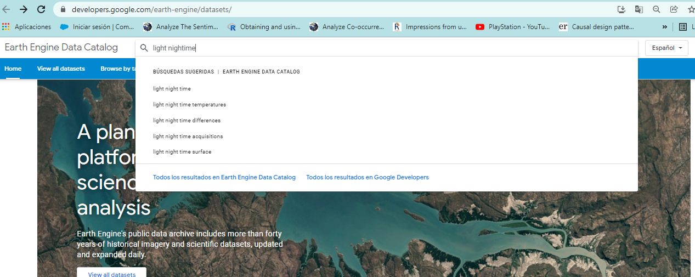
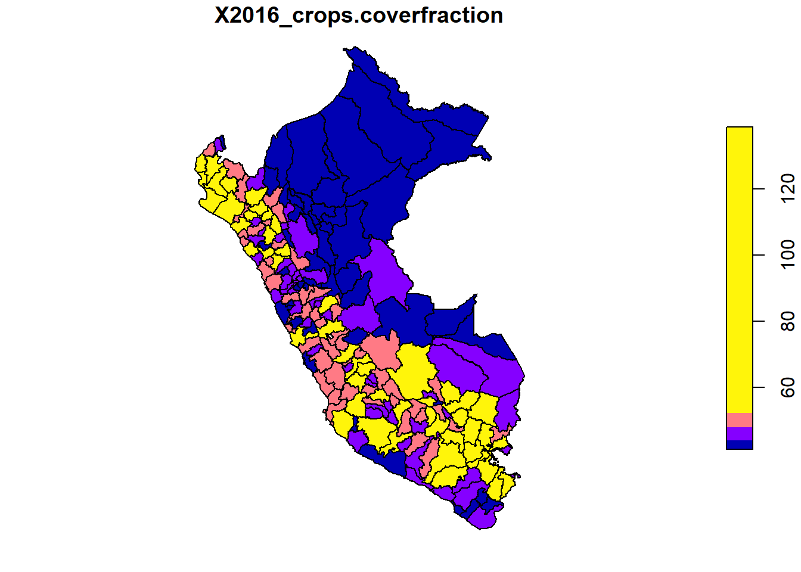

'data.frame': 25 obs. of 24 variables:
$ depto : chr "01" "02" "03" "04" ...
$ area1 : num 0.494 0.708 0.574 0.947 0.683 ...
$ sexo2 : num 0.493 0.504 0.502 0.506 0.502 ...
$ edad2 : num 0.236 0.236 0.243 0.256 0.257 ...
$ edad3 : num 0.201 0.206 0.197 0.226 0.202 ...
$ edad4 : num 0.167 0.19 0.177 0.195 0.169 ...
$ edad5 : num 0.0709 0.0984 0.0936 0.0862 0.0867 ...
$ etnia2 : num 0.02463 0.02454 0.00193 0.01763 0.00634 ...
$ discapacidad1 : num 0.0876 0.1134 0.1078 0.1089 0.1031 ...
$ anoest2 : num 0.396 0.283 0.281 0.192 0.291 ...
$ anoest3 : num 0.27 0.32 0.304 0.33 0.318 ...
$ anoest4 : num 0.119 0.202 0.177 0.341 0.179 ...
$ etnia1 : num 0.121 0.272 0.676 0.283 0.635 ...
$ tiene_alcantarillado: num 0.663 0.561 0.669 0.523 0.661 ...
$ tiene_electricidad : num 0.459 0.39 0.467 0.396 0.496 ...
$ tiene_acueducto : num 0.465 0.425 0.439 0.476 0.479 ...
$ tiene_gas : num 0.509 0.401 0.554 0.105 0.457 ...
$ tiene_internet : num 0.956 0.817 0.911 0.673 0.896 ...
$ piso_tierra : num 0.456 0.355 0.461 0.11 0.389 ...
$ material_paredes : num 0.877 0.719 0.861 0.45 0.835 ...
$ material_techo : num 0.349 0.398 0.386 0.362 0.409 ...
$ rezago_escolar : num 0.162 0.253 0.227 0.405 0.233 ...
$ alfabeta : num 0.108 0.107 0.172 0.034 0.138 ...
$ tasa_desocupacion : num 0.000466 0.002063 0.000991 0.003077 0.001157 ...Información auxiliar (Imágenes satelitales),
CEPAL - División de Estadísticas Sociales
Cesno Perú 2017.
El XII Censo de Población, VII de Vivienda y III de Comunidades Indígenas o Censo peruano de 2017, publicado como Censo 2017 fue el décimo segundo censo nacional de población, séptimo de vivienda y tercero de comunidades indígenas que llevó a cabo el Instituto Nacional de Estadística e Informática (INEI) en 2017.
A partir de los resultados del censo se identifican las covariables para el modelo predictivo: departamento, provincia, sexo, edad, etnia, años de estudio, área (urbano, rural), discapacidad, viviendas con acceso a servicios de alcantarillado, energía, agua potable, conexión a gas, proporción de hogares con acceso a internet, proporción de hogares con pisos no adecuados, proporción de hogares con paredes no adecuadas, proporción de hogares con techos no adecuados, tasa de personas con rezago en la educación, índice de alfabetización y tasa de desocupación.
Las covariables identificadas se calculan para el departamento o la provincia según sea necesario, para esto nos apoyamos en la librería redatam desarrollada por CEPAL y la cual esta disponible en el enlace https://redatamr.ideasybits.com/docs/installation/. Las covariables están consolidadas en el archivo statelevel_predictors_df.rds
Uso de imágenes satalitales y SAE
Uno de los artículo pioneros de estimación de áreas pequeñas fue el artículo de Singh, R, et. al. (2002) el cual abordó la estimación del rendimiento de cultivos para los tehsil (unidad subadministrativa) del distriyo Rohtak district en Haryana (India).
Las imagénes raster representan el mundo mediante un conjunto de celdas contiguas igualmente espaciadas conocidas como pixeles, estas imágenes tienen información como un sistema de información geográfico, Un sistema de referencia de coordenadas. Las imágenes almacenan un identificador, un valor en cada pixel (o un vector con diferentes valores) y cada celda tiene asociada una escala de colores.
Las imágenes pueden obtenerse crudas y procesadas, estas primeras contienen solamente las capas de colores, las segundas contienen también valores que han sido procesados en cada celda (índices de vegetación, intensidad lumínica, tipo de vegetación).
La información cruda puede utilizarse para entrenar características que se desean entrenar (carreteras, tipo de cultivo, bosque / no bosque), afortunadamente en Google Earth Engine encontramos muchos indicadores procesadas asociadas a un pixel. Estos indicadores pueden agregarse a nivel de un área geográfica.
Fuentes de datos de imágenes satelitales
Algunas de las principales fuentes de imágenes satalitales son:
http://earthexplorer.usgs.gov/
https://lpdaacsvc.cr.usgs.gov/appeears/
https://search.earthdata.nasa.gov/search
https://scihub.copernicus.eu/
https://aws.amazon.com/public-data-sets/landsat/
Sin embargo la mayor parte de estas fuentes están centralizadas en Google Earth Engine que permite buscar fuentes de datos provenientes de imágenes satelitales. GEE se puede manejar porm medio de APIS en diferentes lenguajes de programación: Javascript (por defecto), Python y R (paquete rgee).
Google Earth Eninge
Crear una cuenta en link, una vez que se ingrese a la cuenta puede buscarse los conjuntos de datos de interés:

Una vez se busque el conjunto de datos se puede abrir un editor de código brindado por google en Javascript.
Copiar y pegar la sintaxis que brinda el buscador de conjunto de datos para visualizar la imagen raster y disponer de sentencias que permitan la obtención del conjunto de datos de interés posteriormente en R

Instalación de rgee
Descargar e instalar anaconda o conda. (https://www.anaconda.com/products/individual)
Abrir Anaconda prompt y configurar ambiente de trabajo (ambiente python rgee_py) con las siguientes sentencias:
conda create -n rgee_py python=3.9
activate rgee_py
pip install google-api-python-client
pip install earthengine-api
pip install numpy- Listar los ambientes de Python disponibles en anaconda prompt
conda env list- Una vez identificado la ruta del ambiente ambiente rgee_py definirla en R (no se debe olvidar cambiar \ por /).
- Instalar
reticulateyrgee, cargar paquetes para procesamiento espacial y configurar el ambiente de trabajo como sigue:
library(reticulate) # Conexión con Python
library(rgee) # Conexión con Google Earth Engine
library(sf) # Paquete para manejar datos geográficos
library(dplyr) # Paquete para procesamiento de datos
rgee_environment_dir = "C://Users//guerr//.conda//envs//rgee_py"
# Configurar python (Algunas veces no es detectado y se debe reiniciar R)
reticulate::use_python(rgee_environment_dir, required=T)
rgee::ee_install_set_pyenv(py_path = rgee_environment_dir, py_env = "rgee_py")
Sys.setenv(RETICULATE_PYTHON = rgee_environment_dir)
Sys.setenv(EARTHENGINE_PYTHON = rgee_environment_dir)- Una vez configurado el ambiente puede iniciarlizarse una sesión de Google Earth Engine como sigue:
rgee::ee_Initialize(drive = T)Notas:
Se debe inicializar cada sesión con el comando
rgee::ee_Initialize(drive = T).Los comandos de javascript que invoquen métodos con “.” se sustituyen por signo peso ($), por ejemplo:
ee.ImageCollection().filterDate() # Javascript
ee$ImageCollection()$filterDate() # RDescargar información satelital
- Paso 1: disponer de los shapefile
PER <- read_sf("../Shape/PROVINCIAS.shp")
PER <- PER %>% mutate(provi = str_pad(IDPROV, pad = "0", width = 4))
plot(PER["geometry"])- Paso 2: Seleccionar el archivo de imágenes que desea procesar, para nuestro ejemplo luces nocturnas.
luces <- ee$ImageCollection("NOAA/DMSP-OLS/NIGHTTIME_LIGHTS") %>%
ee$ImageCollection$filterDate("2013-01-01", "2014-01-01") %>%
ee$ImageCollection$map(function(x) x$select("stable_lights")) %>%
ee$ImageCollection$toBands()- Paso 3: Descargar la información
## Tiempo 10 minutos
PER_luces <- map(unique(PER$provi),
~tryCatch(ee_extract(
x = luces,
y = PER["provi"] %>% filter(provi == .x),
ee$Reducer$sum(),
sf = FALSE
) %>% mutate(provi = .x),
error = function(e)data.frame(provi = .x)))
PER_luces %<>% bind_rows()Repetir la rutina para:
Tipo de suelo: crops-coverfraction (Porcentaje de cobertura vegetal para tierras de cultivo clase de cobertura terrestre) y urban-coverfraction (Porcentaje de cobertura del suelo para la clase de cobertura del suelo edificada) disponibles en https://developers.google.com/earth-engine/datasets/catalog/COPERNICUS_Landcover_100m_Proba-V-C3_Global#description
Tiempo de viaje al hospital o clínica más cercana (accessibility) y tiempo de viaje al hospital o clínica más cercana utilizando transporte no motorizado (accessibility_walking_only) información disponible en https://developers.google.com/earth-engine/datasets/catalog/Oxford_MAP_accessibility_to_healthcare_2019
Modificación humana, donde se consideran los asentamiento humano, la agricultura, el transporte, la minería y producción de energía e infraestructura eléctrica. En el siguiente link encuentra la información satelital https://developers.google.com/earth-engine/datasets/catalog/CSP_HM_GlobalHumanModification#description
Paso 4 consolidar la información.
| provi | F182013_stable_lights | X2016_crops.coverfraction | X2016_urban.coverfraction | X2016_gHM | accessibility | accessibility_walking_only |
|---|---|---|---|---|---|---|
| 0101 | 1067.0353 | 8119.6157 | 1153.8706 | 615.2762 | 376304.06 | 1163057.7 |
| 0102 | 1148.4235 | 3211.6549 | 1236.6510 | 891.2683 | 3941275.37 | 6915039.4 |
| 0103 | 269.0000 | 2593.5765 | 498.4549 | 491.7148 | 1976502.68 | 3143169.8 |
| 0104 | 16.0000 | 1490.1373 | 499.8667 | 1472.6607 | 16147081.84 | 32630049.0 |
| 0105 | 275.8627 | 11998.7843 | 750.8118 | 785.3755 | 490395.33 | 1578410.1 |
| 0106 | 182.0000 | 817.7725 | 375.5098 | 443.8489 | 1051828.32 | 1620579.8 |
| 0107 | 1811.5961 | 14613.4824 | 1741.3137 | 1224.8117 | 2217498.28 | 2924311.8 |
| 0201 | 3871.1843 | 11183.3725 | 2033.8863 | 614.1994 | 182650.04 | 698184.8 |
| 0202 | 190.2471 | 1517.1961 | 230.4431 | 140.1352 | 61339.09 | 280161.4 |
| 0203 | 106.0000 | 4142.7569 | 340.3882 | 154.1830 | 19228.58 | 118932.9 |
Los resultados se muestran en los siguientes mapas
